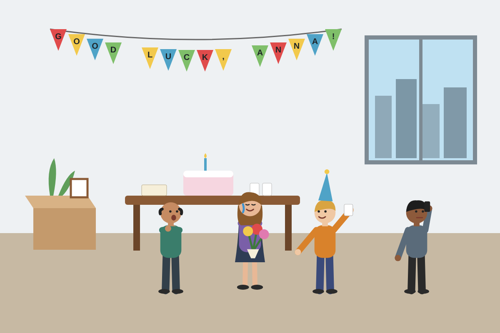

Questions
- Describe what you can see in the picture.
- Why might Anna be leaving her job? Give two possible reasons.
- How do you think Anna feels? Why?
- Why might the man by the window not be joining in?
- What do you think Anna's colleagues will say to her?
- What usually happens when someone leaves a job in your country?
- Talk about a time when you said goodbye to someone important.
Useful language
Describing: In this picture I can see... · In the background / foreground... · On the left / right...
Guessing: It looks like... · She might be... · He must be... because... · They can't be... · I'm not sure, but maybe...
Feelings: She looks worried / relieved / emotional · He seems to be in a hurry